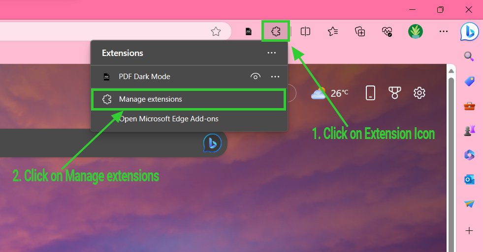
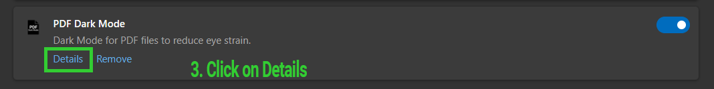
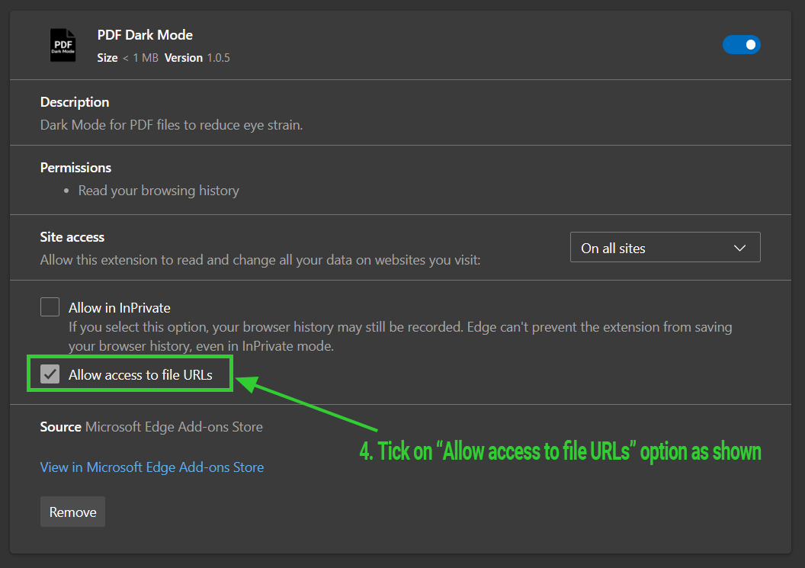

Welcome to PDF Dark Mode
Plan: Free
Your extension is ready. Enable local PDF access below, then unlock Pro for extra reading modes and per-site rules.
Already purchased? Open the extension popup and click Have a license? Activate here.

What you get with Pro
- Sepia mode for warm long-session reading
- AMOLED mode for deeper blacks
- Per-site allow/block rules for custom behavior
- Automatic license validation in the background
Enable extension access for local PDFs
Complete these steps once so PDF Dark Mode can work on file:// PDFs.
-
Step 1: Open Extensions tab
Step 2: Click Manage extensions
-
Step 3: Click Details under PDF Dark Mode

-
Step 4: Turn on Allow access to file URLs
